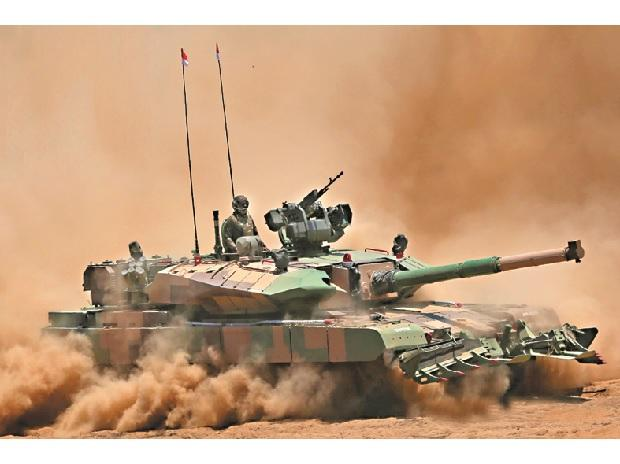
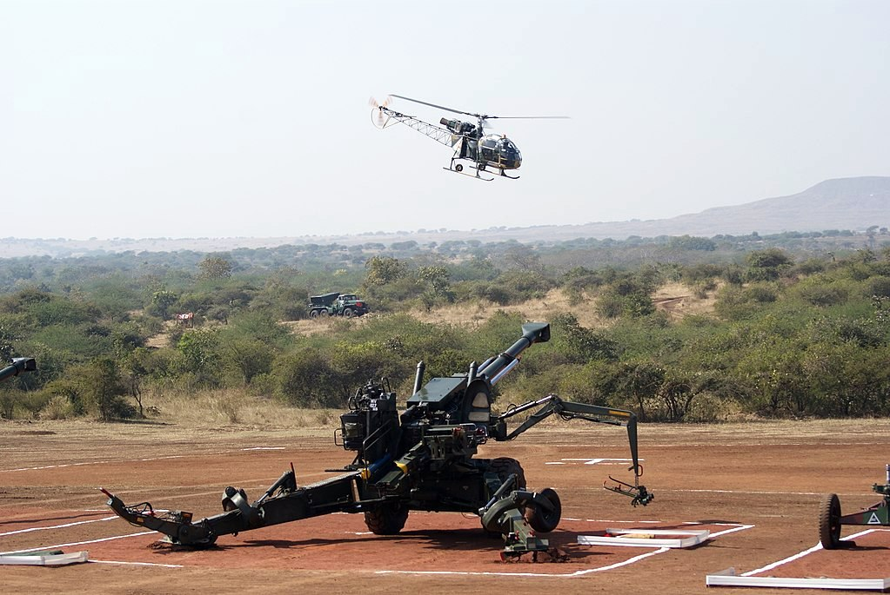
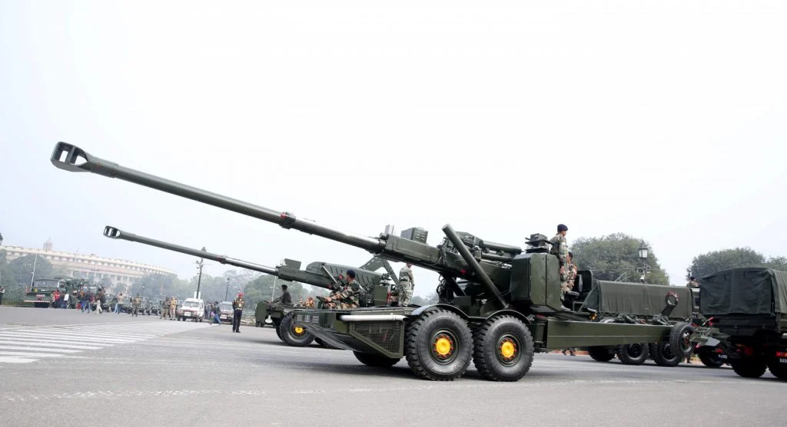
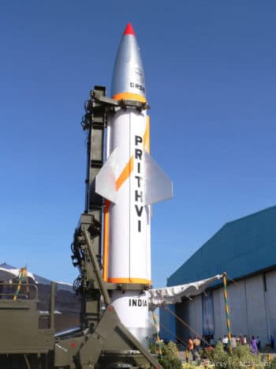
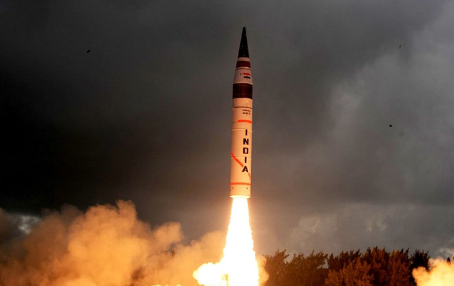
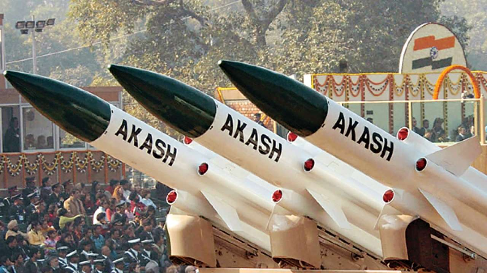
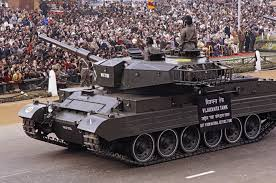

Arjun Main Battle Tank (MBT):A third-generation indigenous tank with heavy armor
and advanced fire control.Known for its powerful 120mm main gun, sophisticated fire control, excellent
all-terrain mobility (earning it "Desert Ferrari" nickname), and strong composite armour

Dhanush:India's first indigenously built 155mm artillery gun. Manufactured by Advanced Weapons
and Equipment, India at Gun Carriage Factory Jabalpur, previously a part of the Ordnance Factory Board (OFB). The
Dhanush project was started by OFB to replace the older 105 mm Indian Field Gun, 105 mm Light Field Gun and the
Russian 122 mm guns with a modern 155 mm artillery gun.

ATAGS (Advanced Towed Artillery Gun System):A 100% indigenous, long-range 52-caliber
gun with autonomous capabilities, designed by DRDO. It shows a large, modern, indigenous Indian howitzer
featuring a long barrel, all-electric drive, advanced fire control, and an automated ammunition handling
system, designed for high mobility and long-range firepower, often seen towed by a robust vehicle,
used for Indian Army modernization

MISSILES
IGMDP refers to India's Integrated Guided Missile Development Programme,
a 1983 project led by Dr. A.P.J. Abdul Kalam that developed five key missiles: Prithvi (short-range ballistic),
Agni (intermediate-range ballistic), Akash (medium-range surface-to-air), Trishul (short-range surface-to-air),
and Nag (anti-tank).
Prithvi:The Prithvi missile is India's first indigenously developed series of
short-range surface-to-surface ballistic missiles, developed by DRDO, with variants like Prithvi-I
(150km range), Prithvi-II (250km), and the naval Dhanush (Prithvi-III, 350km), crucial for India's
strategic defense and nuclear deterrence, frequently tested for validation.

Agni:It means fire in Sanskrit and refers to the prominent Vedic Hindu god of fire,
a divine messenger carrying offerings, symbolizing transformation, and serving as a bridge between
humans and gods, but it also denotes digestive fire in Ayurveda, and refers to India's Agni missile
series. An intermediate-range surface-to-surface ballistic missile, with variants developed to target
long-range threats.

Akash:The Akash Missile is India's indigenously developed, medium-range surface-to-air missile
(SAM) system, designed by DRDO to protect vulnerable areas from aerial threats like aircraft, drones, and
cruise missiles, featuring mobile platforms, all-weather capability, and simultaneous multi-target engagement,
with variants like Akash Prime offering enhanced range and indigenous components for high-altitude defense,
serving both the Indian Air Force (IAF) and Army.

Trishul:Shiva Trishul - Vimanika ComicsA Trishul is the three-pronged spear, a divine weapon
of Lord Shiva in Hinduism, symbolizing creation, preservation, and destruction, and representing divine balance.
The Trishul missile was India's short-range, quick-reaction surface-to-air missile developed by DRDO, defending
naval vessels and land assets against low-flying aircraft and sea-skimming missiles, with a range
of about 9-12 km.
Nag:The Nag missile (NAG) is India's indigenous 3rd-generation, fire-and-forget, top-attack
anti-tank guided missile (ATGM) developed by DRDO for destroying main battle tanks with composite and reactive
armour.
Tanks (Cannons)
India's indigenous tanks include the historic Vijayanta (license-built but indigenously
produced), the advanced Arjun Main Battle Tank (MBT), and the new Zorawar Light Tank for mountain warfare.
Vijayanta: The Vijayanta was India's first indigenous main battle tank (MBT), built under license
from the UK's Vickers Mk. 1, serving as the backbone of the Indian Army for decades after its 1965 induction, f
amous for its role in the 1971 Indo-Pak War and featuring a 105mm gun, with production by Heavy Vehicles.

Arjun (MBT):A fully indigenous Main Battle Tank developed by DRDO (Defence Research and
Development Organisation). Mass-produced at HVF Avadi for the Indian Army. Known for advanced firepower,
mobility, and protection, designed for Indian conditions.
Zorawar (Light Tank): India's first indigenous light tank, specifically for high-altitude
terrain like Ladakh. Rapidly developed by L&T and DRDO, incorporating advanced tech for mountain operations.
Undergoing trials for induction into the Army.